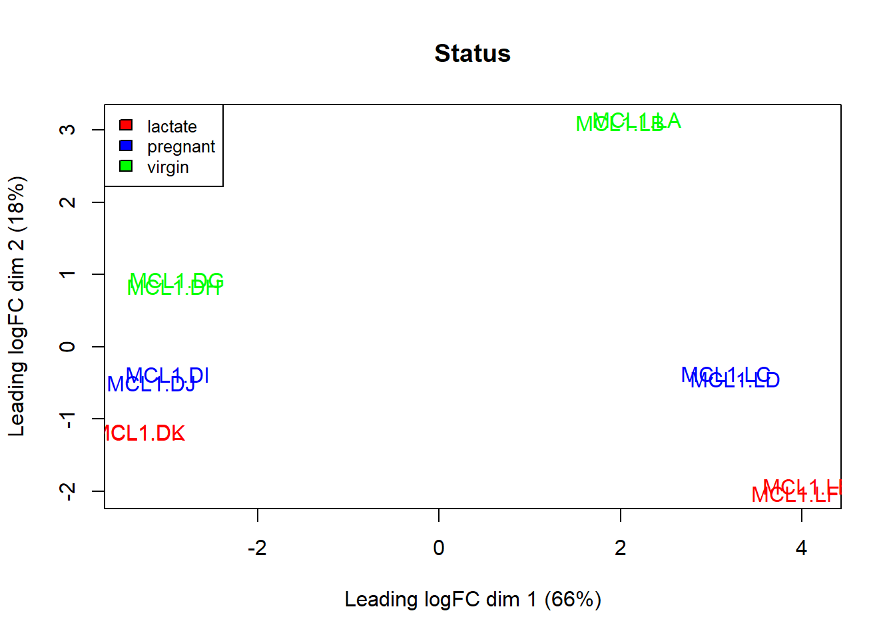
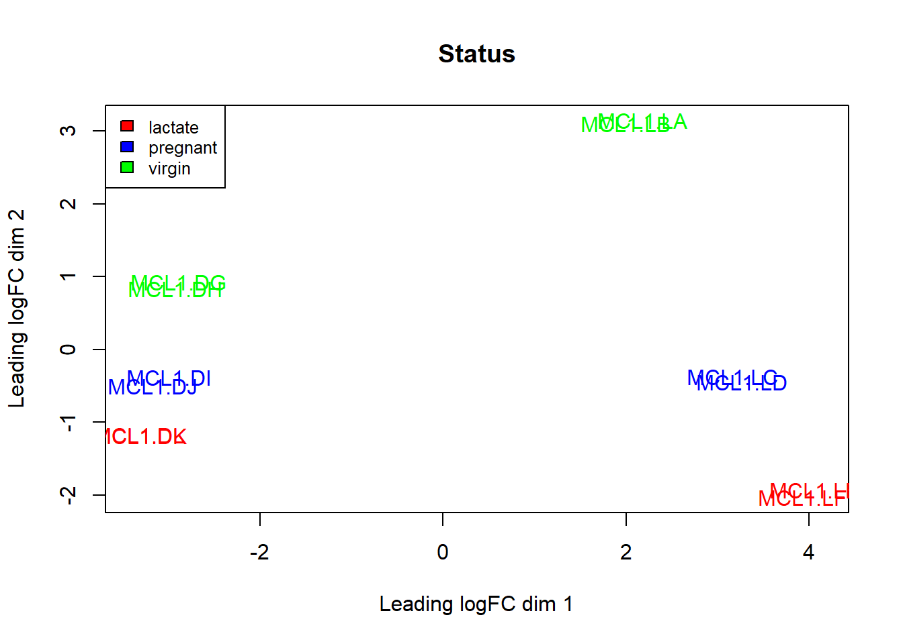

Chapter 9 Error
library(tidyverse)
library(treemapify)
library(pwr)In a jury trial under the American system of justice the defendant stands accused of a crime by a prosecutor. Both sides present evidence before a jury. The jury’s duty is to weigh the evidence then vote in favor of or against a conviction.
The jury doesn’t know the truth.
A jury is at risk of making two types of mistakes: An innocent person might be convicted, or a guilty person might be acquitted. They can also make two correct calls: Convict a guilty person or acquit someone who is innocent.
Without ever knowing for sure what is actually true, they are instructed by the judge to record their decision on the basis of a threshold rule. In a trial the rule is vote to convict only when you believe “it is beyond a reasonable doubt” the accused is guilty.
In science the researcher is like a jury. The experiment is like a trial. At the end, the researcher has the same problem that jurors face. There is a need to conclude whether the experiment worked or not. And there’s no way to know with absolute certainty. Mistaken judgments are possible.
Whereas the jury works within the “beyond a reasonable doubt” framework, researchers operate within a framework that establishes tolerance limits for error.
Every hypothesis tested risks two types of error. A type 1 error is committed when the researcher rejects the null when in fact there is no effect. This is also known as a false positive. A type 2 error is not rejecting the null when it should be rejected, which is known as a false negative.
Or the researcher might not make an error at all. The sensitivity of an experiment is conclude correctly there is no effect, and power (also known as specificity) is concluding correctly there is an effect. Sensitivity and power are the complements of type 1 and type 2 error, respectively
9.1 Setting type 1 and type 2 error thresholds
In the planning stages of an experiment the researcher establishes tolerance for these errors. A balance has to be struck between aversion for each error type, the ability to make the right call, and the costs involved for being either wrong or right.
9.1.1 Setting alpha-the type 1 error
In the biological sciences the standard for type 1 error is 5%, meaning in any given experiment (no matter the number of comparisons to be made), the chance of generating a false positive should be limited to 5%.
The acceptable type 1 error limit is labeled alpha, or \(\alpha\). In several R statistical functions, it is controlled by adjusting its complement, the confidence level.
Why is \(\alpha\) 5% and not some other value? Credit for that is owed largely to R.A. Fisher who offered that a 1 in 20 chance of making such a mistake seemed reasonable. That number seems to have stuck, at least in the biological sciences.
The researcher is always free to establish, and defend, some other level of \(\alpha\). In the field of psychology, for example, \(\alpha\) is historically 10%.
There is nothing to stop a researcher from selecting a threshold below or above 5%. She just needs to be prepared to defend the choice.
9.1.1.1 The decision rule
The \(\alpha\) is stated before an experiment begins, but operationalized during the final statistical analysis on the basis of p-values generated from statistical tests. The null hypothesis is rejected when a p-value is less than this preset \(\alpha\).
9.1.1.2 Experimentwise error
An experiment that just compares two groups (eg, placebo vs drug) generates only one hypothesis. An experiment comparing \(k\) groups (eg, placebo vs drug1, vs drug2…drugk-1) generates \(m=\frac{k(k-1)}{2}\) hypotheses.
For experiments that generate multiple hypotheses it is important to maintain the overall \(\alpha\) for the experiment at 5%. If not checked, the experiment-wise error would inflate with each hypothesis tested.
Several methods have been devised to maintain experiment-wise \(\alpha\) for multiple comparisons. The most conservative of these is the Bonferroni correction \(\alpha_m=\frac{\alpha}{m}\). Thus, if \(m = 10\) hypotheses are tested, the adjusted threshold for each, \(\alpha_m\), is 0.5%, or a p-value of 0.005. If 1000 hypotheses are tested, such as in a mini-gene screen, the p-value threshold for each would be 0.00005.
9.1.2 Power: Setting beta-the type 2 error
In the biological sciences the tolerance for type 2 error, otherwise symbolized as \(\beta\), is generally in the neighborhood of 20%.
It’s a bit easier to discuss \(\beta\) through its complement, \(1-\beta\) or power. Thus, experiments run at 80% power, which are generally regarded as well-designed, run at 20% risk of type 2 error.
Operationally, an experiment is designed to hit a specific level of power via planning of the sample size. “Power calculations” return sample size by integrating intended power, \(\alpha\), and an estimated effect size.
Students tend to fret over effect size estimates. They are nothing more than a best guess of what to expect. A crude estimate. The researcher should use values representing a minimum for a scientific meaningful effect size. The effect size is estimated on the basis of scientific judgment and preliminary data or published information.
If the effect size estimate turns out to be accurate, an experiment run at that sample size should be close to the intended power.
In a perfect world, we might consider powering up every experiment to 99%, completely minimizing the risk of \(\beta\). As you’ll see in the simulation below, the incremental gain in power beyond ~80% diminishes with sample size. In other words, perfect power and very low \(\beta\) comes at a high cost. The choice of what power to run an experiment should strike the right balance between the risk of missing out on a real effect against the cost burden of additional resources and time.
R’s pwr package has a handful of functions to run power calculations for given statistical tests. These, unfortunately, do not cover all of the statistical tests, particularly for the most common experimental designs (eg, ANOVA).
In this course, we’ll emphasize performing power calculations using custom Monte Carlo functions, which can be custom adapted for any type of experiment involving a statistical test.
Here’s a custom Monte Carlo-based power function for a t-test. To illustrate the diminishing returns argument, the function calculates power comparing samples drawn from \(N(0,1)\) to samples drawn from \(N(1,1)\). The graph is generated by passing a range of sample sizes into the function. Note how the gain in power plateaus.
t.pwr <- function(n){
#Intitializers. Means and SD's of populations compared.
m1=1; sd1=1; m2= 0; sd2=1
# the monte carlo
ssims=1000
p.values <- c()
i <- 1
repeat{
x=rnorm(n, m1, sd1);
y=rnorm(n, m2, sd2);
p <- t.test(x, y,
paired=F,
alternative="two.sided",
var.equal=F,
conf.level=0.95)$p.value
p.values[i] <- p
if (i==ssims) break
i = i+1
pwr <- length(which(p.values<0.05))/ssims
}
return(pwr)
}
#Run t.pwr over a range of sample sizes and plot results
frame <- data.frame(n=2:50)
data <- bind_cols(frame,
power=apply(frame, 1, t.pwr))
#plot
ggplot(data, aes(n, power))+
geom_point() +
scale_y_continuous(breaks=c(seq(0, 1, 0.1)))+
scale_x_continuous(breaks=c(seq(0,50,2)))+
labs(x="n per group")
## Validation by comparisonC to pwr package results
pwr.t.test(d=1,
sig.level=0.05,
power=0.8,
type="two.sample")##
## Two-sample t test power calculation
##
## n = 16.71472
## d = 1
## sig.level = 0.05
## power = 0.8
## alternative = two.sided
##
## NOTE: n is number in *each* group9.2 Striking the right balance
The script below provides a way to visualize how the relationship between correct (green) and incorrect (red) decisions varies with error thresholds.
The idea is to run experiments under conditions by which green is the dominant color.
Unfortunately, most published biomedical research appears to be severely underpowered findings.
alpha <- 0.05
beta <- 0.20
panel <- data.frame(alpha,
sensitivity=1-alpha,
power=1-beta,
beta)
panel <- gather(panel, key="threshold",
value="percent")
panel <- bind_cols(panel,
truth=c("no effect", "no effect", "effective", "effective"),
decision=c("effective", "no effect", "effective", "no effect"),
choice=c("error", "correct", "correct", "error"))
panel## threshold percent truth decision choice
## 1 alpha 0.05 no effect effective error
## 2 sensitivity 0.95 no effect no effect correct
## 3 power 0.80 effective effective correct
## 4 beta 0.20 effective no effect errorggplot(panel, aes(area=percent, fill=choice, label=threshold))+
geom_treemap(color="white")+
geom_treemap_text(
fontface = "italic",
colour = "white",
place = "centre",
grow = F
)+
scale_fill_manual(values = alpha(c("green3", "red"), .3))
9.3 False discovery rate
The false discover rate, or FDR is another way to estimate experimental error. \[FDR=\frac{false\ positives}{false\ positives + false\ negatives}\]
FDR varies given \(\alpha\), \(\beta\) and the probability of the effect. The probability of the effect bears some comment. Think of it as a prior probability, or the likelihood that an effect being studied is “real”. It takes some scientific judgment to estimate these probability values.
The graph below illustrates how FDR inflates, particularly when running experiments for low probability effects when tested at low power, even at a standard \(\alpha\).
These relationships clearly show that the lower the likelihood of some effect that you would like to test in an experiment, the higher the stringency by which it should be tested.
px <- seq(0.1, 1.0, 0.1) #a range of prior probabilities
tests <- 10000
fdr_gen <- function(beta, alpha){
real_effect <- px*tests
true_pos <- real_effect*(1-beta)
false_neg <- real_effect*beta
no_effect <- tests*(1-px)
true_neg <- tests*(1-alpha)
false_pos <- no_effect*alpha
FDR <- false_pos/(true_pos + false_pos)
return(FDR)
}
upss <- fdr_gen(0.6, 0.05)#under-powered, standard specificity
wpss <- fdr_gen(0.2, 0.05)#well-powered, standard specificity
uphs <- fdr_gen(0.6, 0.01)#under-powered, high specificity
wphs <- fdr_gen(0.2, 0.01)#well-powered, high specificity
fdrates <- data.frame(px,upss, wpss, uphs, wphs)
colnames(fdrates) <- c("Probability",
"5% alpha, 60% beta",
"5% alpha, 20% beta",
"1% alpha, 60% beta",
"1% alpha, 20% beta")
#convert to long format
fdrates <- gather(fdrates, tests, FDR, -Probability)
ggplot(fdrates, aes(Probability,FDR, group=tests))+
geom_point(aes(color=factor(tests)))+
geom_line(aes(color=factor(tests)))